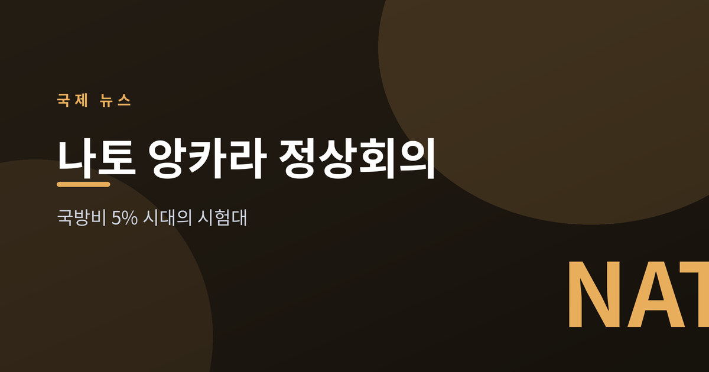
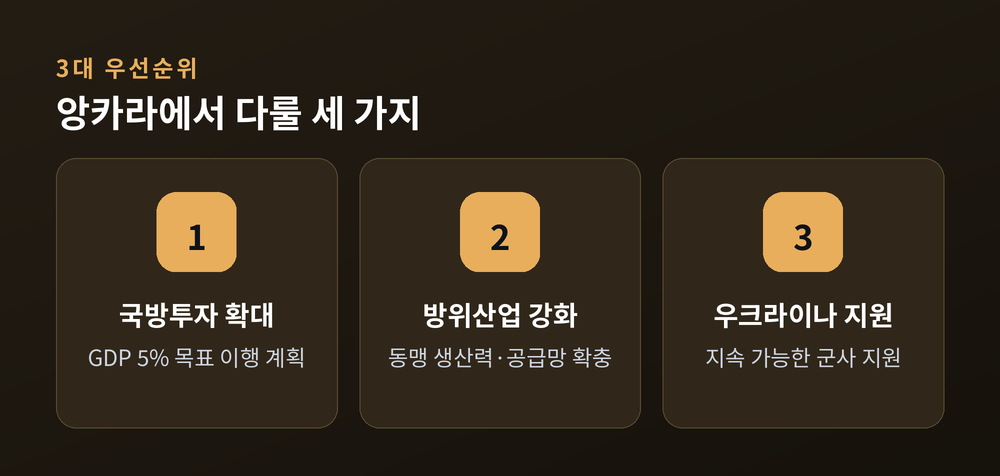
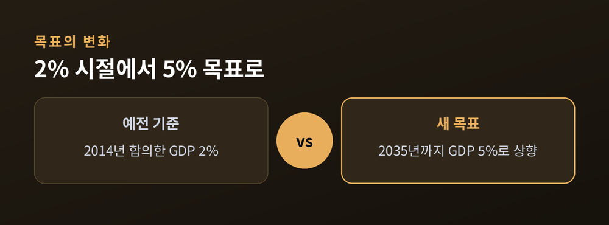
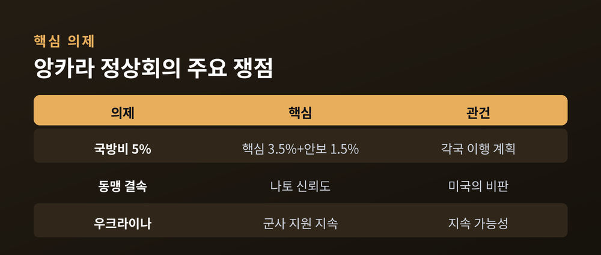

국방비 5% 시대의 첫 시험대

이번 글에서는 7월 7~8일 튀르키예 앙카라에서 열리는 나토 정상회의를 정리해 보겠습니다. 지난해 합의한 "국방비 GDP 5%" 목표가 이번엔 이행의 무대에 오릅니다. 무슨 일이 벌어지는지, 왜 중요한지, 앞으로 어떻게 흘러갈지 차분히 짚어보겠습니다.
나토 정상회의가 7월 7~8일 앙카라 대통령궁에서 열립니다. 32개 회원국 정상이 한자리에 모입니다. 정상회의에 앞서 7일에는 방위산업포럼도 함께 열립니다.
사무총장 마르크 뤼터는 세 가지를 우선순위로 내걸었습니다. 국방투자 확대, 방위산업 생산력 강화, 우크라이나 지원 지속입니다. 세 가지 모두 결국 하나의 질문으로 모입니다. "동맹이 스스로를 지킬 힘을 갖추었는가"입니다.
개최지가 튀르키예라는 점도 눈여겨볼 대목입니다. 유럽과 중동을 잇는 길목에서, 개최국은 방산 협력과 중재자 역할을 넓히려 합니다. 정상회의를 자국에서 여는 것 자체가 위상을 보여주는 무대이기도 합니다.

이번 회의의 중심은 지난해 헤이그 정상회의에서 합의한 목표입니다. 2035년까지 국방비를 GDP의 5%로 올리기로 한 약속입니다.
5%는 둘로 나뉩니다. 핵심 국방에 3.5%, 인프라·사이버·회복력 같은 넓은 안보 투자에 1.5%입니다. 무기와 병력만이 아니라, 사회 전체의 대비 능력을 함께 본다는 뜻입니다.
예전 기준은 2014년에 정한 2%였습니다. 지금은 그 두 배를 훌쩍 넘는 숫자를 향해 갑니다. 그만큼 안보 환경을 위중하게 본다는 신호입니다.
합의는 이미 끝났습니다. 남은 것은 이행입니다. 앙카라는 각국이 "어떻게 도달할지" 계획을 내놓아야 하는 자리입니다. 목표 궤적은 2029년에 한 차례 재검토하기로 되어 있습니다.

세계가 군비를 늘리는 흐름 한복판에 있기 때문입니다.
한 예로, 핵보유 9개국의 핵무기 지출은 2025년 1190억 달러로 사상 최대를 기록했습니다(ICAN). 전년보다 19% 늘어난 규모입니다.
유럽의 우크라이나 전쟁과 중동의 불안이 이런 지출을 밀어 올리고 있습니다. 나토의 5% 목표도 같은 맥락 위에 있습니다. 안보 불안이 커질수록 방어에 쓰는 돈도 함께 늘어나는 구조입니다.
다만 부담을 우려하는 목소리도 있습니다. 재정 여건이 나라마다 다르기 때문입니다. 복지와 국방 사이에서 예산을 어떻게 나눌지, 각국이 저마다 고민을 안게 됩니다.

관전 포인트는 결속입니다. 트럼프 미국 대통령의 나토 비판이 이어지는 가운데, 동맹의 신뢰도가 시험대에 오릅니다.
우크라이나 지원을 얼마나 지속할 수 있느냐도 과제입니다. 지원의 규모보다 지속 가능성이 관건입니다.
숫자에 합의하는 일과 그 숫자를 지키는 일은 다릅니다. 앙카라는 그 간극을 좁힐 수 있느냐를 가늠하는 자리입니다.
정리하면 이렇습니다. 목표는 정해졌고, 이제 각국이 이행 계획을 꺼내야 합니다.
— 5%라는 숫자는 합의의 끝이 아니라, 이행의 시작입니다.
앙카라에서 어떤 청사진이 나올지, 차분히 지켜볼 만합니다.